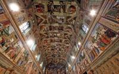
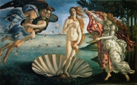
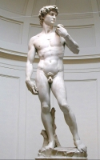
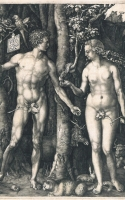

|  |
A Capela CistinaApesar do racionalismo, a Igreja Católica e a fé ainda continuaram a exercer um papel central na vida do homem, que procurava conciliar o conhecimento científico com a fé cristã. Os afrescos pintados por Michelangelo no teto da Capela Sistina, no Vaticano, retratam cenas do Antigo Testamento. Uma pintura particularmente representativa é "A Criação de Adão", no qual Deus aparece revestido de humanidade e busca tocar o dedo do primeiro homem segundo a Bíblia, Adão. |
 |
A Escola de Atenas - Rafael SanzioO Renascimento valoriza o racionalismo, o espírito crítico e a natureza. O afresco do romano Rafael Sanzio retoma o passado greco-romano clássico para simbolizar a busca da verdade e da sabedoria. A obra foi encomendada pelo Papa Julio 2º e representa um encontro imaginário de filósofos clássicos como Platão, Aristóteles, Sócrates, Euclides, Heráclito e Ptolomeu. Uma das características da escola de pintura romana desse período é tentar equilibrar linha e cor, razão e sentimento. |
 |
A Última Ceia - Leonardo da Venci"A Última Ceia" (1495-1498), de Leonardo da Vinci - Pintado como um mural dentro de um monastério de Milão, "A Última Ceia" retrata de forma dramática a última refeição de Jesus e seus 12 discípulos. Outra característica da arte do período renascentista é o uso das técnicas de perspectiva. Pintores como Da Vinci recorreram à geometria e aprimoraram o uso da luz e sombra para criar efeitos tridimensionais. Seus estudos de perspectiva são considerados insuperáveis. |
|  |
O Nascimento de Vênus - Sandro Botticelli"O Nascimento de Vênus" (1485), de Sandro Botticelli - A pintura de Botticelli retrata o nascimento de Vênus, a deusa do amor, surgindo nua numa concha sobre as espumas do mar. Sua obra chama atenção para a leveza dos corpos esguios e desprovidos de força: eles parecem flutuar, expressando suavidade e graça, mas sem o realismo de outros pintores da época. O tema revolucionou o Renascimento, pois foi a primeira obra a retratar elementos exclusivamente mitológicos, sem a referência direta ao cristianismo. |
 |
Pietà - Michelangelo"Pietà" (1499-1500), Michelangelo Buonarroti - A representação da Virgem Maria com Jesus ao colo era um tema muito comum no Renascimento. Uma das obras mais marcantes é a "Pietà", de Michelangelo, que traz uma mãe jovem demais para um filho morto. Feita em mármore, a escultura é uma das mais dramáticas e expressivas da iconografia cristã e traduz o perfeito domínio de anatomia humana que Michelangelo tinha. Michelangelo viveu ao longo da última fase do Renascimento, os anos 1500, e na transição para o Maneirismo. |
 |
Retrato de Dante Alighieri - Sandro Botticelli.jpg"Retrato de Dante Alighieri" (1495), de Sandro Botticelli - O Renascimento marcou a transição da mentalidade medieval para a era moderna, com novas concepções sobre o papel do homem no universo. Foi um período efervescente nos campos da literatura, artes, ciências, invenções e na filosofia. Botticelli retratou o poeta medieval Dante Alighieri, vestido com uma túnica vermelha e uma coroa de louros. O pintor era da escola florentina de pintura, de Florença, caracterizada pelo racionalismo, demonstrado tanto pelo predomínio da linha sobre a cor, como pelo "sfumato", técnica usada para gerar variações de luz e sombra |
 |
O Homem VitruvianoHomem Vitruviano é uma obra de Leonardo da Vinci. O famoso desenho do artista revela o interesse pela anatomia e geometria, além de simbolizar o espírito humanista, que coloca o homem no centro do universo (antropocentrismo) e que usa a razão para compreender o mundo, contrariando a visão medieval que glorificava o divino e o extraterreno. A obra acompanhava as notas feitas pelo artista por volta do ano 1490 num dos seus diários. Descreve uma figura masculina nua separada e simultaneamente em duas posições sobrepostas com os braços inscritos num círculo e num quadrado.[1] A cabeça é calculada como sendo um oitavo da altura total. Às vezes, o desenho e o texto são chamados de Cânone das Proporções. O desenho atualmente faz parte da coleção da Gallerie dell'Accademia (Galeria da Academia) em Veneza, Itália. |
|  |
David - Michelangelo"Davi" (1501-1504), de Michelangelo Buonarroti - A monumental escultura de mármore, com 5 metros de altura, representa o jovem Davi, que derrubou o gigante Golias. Michelangelo se inspirou na escultura de Hércules, do mito grego, para compor uma imagem e um homem forte e de proporções perfeitas, destacando as qualidades "superiores" do homem, como o heroísmo e força. |
 |
Mona Lisa - Leonardo da Vinci"Mona Lisa" (1503-1506), de Leonardo da Vinci - A pintura de Mona Lisa, exposta no museu do Louvre de Paris, é provavelmente a mais famosa de todos os tempos e retrata a jovem Lisa Gherardini. A técnica do "sfumato" foi utilizada por Da Vinci com maestria. A pintura foi uma encomenda do mercador Francesco di Zanobi del Giocondom, marido de Lisa, embora nunca tenha sido entregue a ele. Uma das características do Renascimento foi o surgimento de uma nova classe social, a burguesia, que manifestava seu interesse pela arte no papel de mecenas, patrocinando jovens artistas e intelectuais. |
|  |
Adao e Eva - Albrecht Durer"Adão e Eva" (1504), Albrecht Dürer - O Renascimento se espalhou por outros países europeus, como França, Inglaterra e Alemanha. A forma característica da criação artística alemã nesse período foi a gravura sobre metal ou madeira. O mais notável gravurista foi Albrecht Dürer (1471-1528), que se inspirou nas perspectivas dos italianos e usou teorias matemáticas para produzir suas obras. Para o trabalho acima, ele construiu réguas e compassos especiais para construir as figuras. |